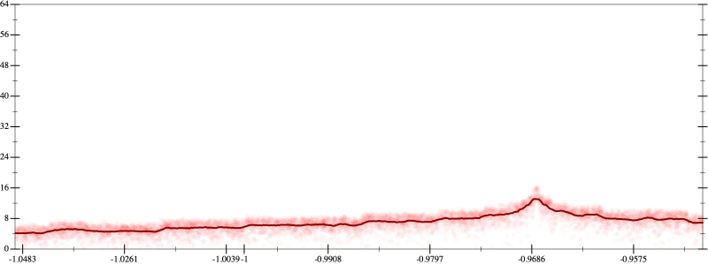
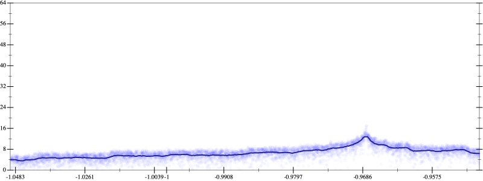
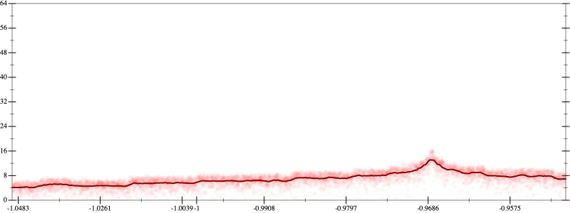
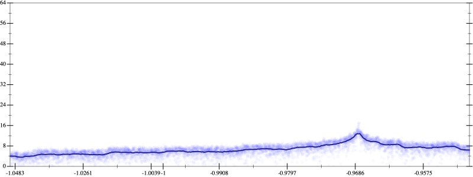

Initial program 6.9
\[\left(\left(\left(2.460938 \cdot x + -36.09375 \cdot \left(\left(x \cdot x\right) \cdot x\right)\right) + 140.765625 \cdot \left(\left(\left(\left(x \cdot x\right) \cdot x\right) \cdot x\right) \cdot x\right)\right) + -201.09375 \cdot \left(\left(\left(\left(\left(\left(x \cdot x\right) \cdot x\right) \cdot x\right) \cdot x\right) \cdot x\right) \cdot x\right)\right) + 94.960938 \cdot \left(\left(\left(\left(\left(\left(\left(\left(x \cdot x\right) \cdot x\right) \cdot x\right) \cdot x\right) \cdot x\right) \cdot x\right) \cdot x\right) \cdot x\right)\]
- Using strategy
rm Applied add-log-exp6.9
\[\leadsto \left(\left(\left(2.460938 \cdot x + -36.09375 \cdot \left(\left(x \cdot x\right) \cdot x\right)\right) + 140.765625 \cdot \left(\left(\left(\left(x \cdot x\right) \cdot x\right) \cdot x\right) \cdot x\right)\right) + \color{blue}{\log \left(e^{-201.09375 \cdot \left(\left(\left(\left(\left(\left(x \cdot x\right) \cdot x\right) \cdot x\right) \cdot x\right) \cdot x\right) \cdot x\right)}\right)}\right) + 94.960938 \cdot \left(\left(\left(\left(\left(\left(\left(\left(x \cdot x\right) \cdot x\right) \cdot x\right) \cdot x\right) \cdot x\right) \cdot x\right) \cdot x\right) \cdot x\right)\]
Applied add-log-exp6.9
\[\leadsto \left(\left(\left(2.460938 \cdot x + -36.09375 \cdot \left(\left(x \cdot x\right) \cdot x\right)\right) + \color{blue}{\log \left(e^{140.765625 \cdot \left(\left(\left(\left(x \cdot x\right) \cdot x\right) \cdot x\right) \cdot x\right)}\right)}\right) + \log \left(e^{-201.09375 \cdot \left(\left(\left(\left(\left(\left(x \cdot x\right) \cdot x\right) \cdot x\right) \cdot x\right) \cdot x\right) \cdot x\right)}\right)\right) + 94.960938 \cdot \left(\left(\left(\left(\left(\left(\left(\left(x \cdot x\right) \cdot x\right) \cdot x\right) \cdot x\right) \cdot x\right) \cdot x\right) \cdot x\right) \cdot x\right)\]
Applied add-log-exp6.9
\[\leadsto \left(\left(\left(2.460938 \cdot x + \color{blue}{\log \left(e^{-36.09375 \cdot \left(\left(x \cdot x\right) \cdot x\right)}\right)}\right) + \log \left(e^{140.765625 \cdot \left(\left(\left(\left(x \cdot x\right) \cdot x\right) \cdot x\right) \cdot x\right)}\right)\right) + \log \left(e^{-201.09375 \cdot \left(\left(\left(\left(\left(\left(x \cdot x\right) \cdot x\right) \cdot x\right) \cdot x\right) \cdot x\right) \cdot x\right)}\right)\right) + 94.960938 \cdot \left(\left(\left(\left(\left(\left(\left(\left(x \cdot x\right) \cdot x\right) \cdot x\right) \cdot x\right) \cdot x\right) \cdot x\right) \cdot x\right) \cdot x\right)\]
Applied add-log-exp6.9
\[\leadsto \left(\left(\left(\color{blue}{\log \left(e^{2.460938 \cdot x}\right)} + \log \left(e^{-36.09375 \cdot \left(\left(x \cdot x\right) \cdot x\right)}\right)\right) + \log \left(e^{140.765625 \cdot \left(\left(\left(\left(x \cdot x\right) \cdot x\right) \cdot x\right) \cdot x\right)}\right)\right) + \log \left(e^{-201.09375 \cdot \left(\left(\left(\left(\left(\left(x \cdot x\right) \cdot x\right) \cdot x\right) \cdot x\right) \cdot x\right) \cdot x\right)}\right)\right) + 94.960938 \cdot \left(\left(\left(\left(\left(\left(\left(\left(x \cdot x\right) \cdot x\right) \cdot x\right) \cdot x\right) \cdot x\right) \cdot x\right) \cdot x\right) \cdot x\right)\]
Applied sum-log6.9
\[\leadsto \left(\left(\color{blue}{\log \left(e^{2.460938 \cdot x} \cdot e^{-36.09375 \cdot \left(\left(x \cdot x\right) \cdot x\right)}\right)} + \log \left(e^{140.765625 \cdot \left(\left(\left(\left(x \cdot x\right) \cdot x\right) \cdot x\right) \cdot x\right)}\right)\right) + \log \left(e^{-201.09375 \cdot \left(\left(\left(\left(\left(\left(x \cdot x\right) \cdot x\right) \cdot x\right) \cdot x\right) \cdot x\right) \cdot x\right)}\right)\right) + 94.960938 \cdot \left(\left(\left(\left(\left(\left(\left(\left(x \cdot x\right) \cdot x\right) \cdot x\right) \cdot x\right) \cdot x\right) \cdot x\right) \cdot x\right) \cdot x\right)\]
Applied sum-log6.9
\[\leadsto \left(\color{blue}{\log \left(\left(e^{2.460938 \cdot x} \cdot e^{-36.09375 \cdot \left(\left(x \cdot x\right) \cdot x\right)}\right) \cdot e^{140.765625 \cdot \left(\left(\left(\left(x \cdot x\right) \cdot x\right) \cdot x\right) \cdot x\right)}\right)} + \log \left(e^{-201.09375 \cdot \left(\left(\left(\left(\left(\left(x \cdot x\right) \cdot x\right) \cdot x\right) \cdot x\right) \cdot x\right) \cdot x\right)}\right)\right) + 94.960938 \cdot \left(\left(\left(\left(\left(\left(\left(\left(x \cdot x\right) \cdot x\right) \cdot x\right) \cdot x\right) \cdot x\right) \cdot x\right) \cdot x\right) \cdot x\right)\]
Applied sum-log6.9
\[\leadsto \color{blue}{\log \left(\left(\left(e^{2.460938 \cdot x} \cdot e^{-36.09375 \cdot \left(\left(x \cdot x\right) \cdot x\right)}\right) \cdot e^{140.765625 \cdot \left(\left(\left(\left(x \cdot x\right) \cdot x\right) \cdot x\right) \cdot x\right)}\right) \cdot e^{-201.09375 \cdot \left(\left(\left(\left(\left(\left(x \cdot x\right) \cdot x\right) \cdot x\right) \cdot x\right) \cdot x\right) \cdot x\right)}\right)} + 94.960938 \cdot \left(\left(\left(\left(\left(\left(\left(\left(x \cdot x\right) \cdot x\right) \cdot x\right) \cdot x\right) \cdot x\right) \cdot x\right) \cdot x\right) \cdot x\right)\]
Applied simplify7.0
\[\leadsto \log \color{blue}{\left(\left(e^{2.460938 \cdot x} \cdot {\left(e^{-36.09375}\right)}^{\left({x}^{3}\right)}\right) \cdot {\left(e^{{x}^{3} \cdot \left(x \cdot x\right)}\right)}^{\left(140.765625 + \left(x \cdot x\right) \cdot -201.09375\right)}\right)} + 94.960938 \cdot \left(\left(\left(\left(\left(\left(\left(\left(x \cdot x\right) \cdot x\right) \cdot x\right) \cdot x\right) \cdot x\right) \cdot x\right) \cdot x\right) \cdot x\right)\]
Taylor expanded around inf 7.0
\[\leadsto \log \left(\left(e^{2.460938 \cdot x} \cdot \color{blue}{e^{-36.09375 \cdot {x}^{3}}}\right) \cdot {\left(e^{{x}^{3} \cdot \left(x \cdot x\right)}\right)}^{\left(140.765625 + \left(x \cdot x\right) \cdot -201.09375\right)}\right) + 94.960938 \cdot \left(\left(\left(\left(\left(\left(\left(\left(x \cdot x\right) \cdot x\right) \cdot x\right) \cdot x\right) \cdot x\right) \cdot x\right) \cdot x\right) \cdot x\right)\]
Applied simplify6.7
\[\leadsto \color{blue}{\left({x}^{3} \cdot \left(x \cdot x\right)\right) \cdot \left(140.765625 + \left(x \cdot x\right) \cdot -201.09375\right) + \left(\left(\left(x \cdot 94.960938\right) \cdot \left(x \cdot x\right)\right) \cdot {\left(x \cdot x\right)}^{3} + \left(\left(x \cdot x\right) \cdot \left(x \cdot -36.09375\right) + x \cdot 2.460938\right)\right)}\]
- Using strategy
rm Applied add-log-exp6.7
\[\leadsto \left({x}^{3} \cdot \left(x \cdot x\right)\right) \cdot \left(140.765625 + \left(x \cdot x\right) \cdot -201.09375\right) + \color{blue}{\log \left(e^{\left(\left(x \cdot 94.960938\right) \cdot \left(x \cdot x\right)\right) \cdot {\left(x \cdot x\right)}^{3} + \left(\left(x \cdot x\right) \cdot \left(x \cdot -36.09375\right) + x \cdot 2.460938\right)}\right)}\]
Applied simplify6.6
\[\leadsto \left({x}^{3} \cdot \left(x \cdot x\right)\right) \cdot \left(140.765625 + \left(x \cdot x\right) \cdot -201.09375\right) + \log \color{blue}{\left(\left(e^{x \cdot 2.460938} \cdot {\left(e^{-36.09375}\right)}^{\left({x}^{3}\right)}\right) \cdot {\left(e^{x \cdot 94.960938}\right)}^{\left({\left(x \cdot x\right)}^{\left(1 + 3\right)}\right)}\right)}\]
- Using strategy
rm Applied add-cube-cbrt6.6
\[\leadsto \color{blue}{\left(\sqrt[3]{\left({x}^{3} \cdot \left(x \cdot x\right)\right) \cdot \left(140.765625 + \left(x \cdot x\right) \cdot -201.09375\right) + \log \left(\left(e^{x \cdot 2.460938} \cdot {\left(e^{-36.09375}\right)}^{\left({x}^{3}\right)}\right) \cdot {\left(e^{x \cdot 94.960938}\right)}^{\left({\left(x \cdot x\right)}^{\left(1 + 3\right)}\right)}\right)} \cdot \sqrt[3]{\left({x}^{3} \cdot \left(x \cdot x\right)\right) \cdot \left(140.765625 + \left(x \cdot x\right) \cdot -201.09375\right) + \log \left(\left(e^{x \cdot 2.460938} \cdot {\left(e^{-36.09375}\right)}^{\left({x}^{3}\right)}\right) \cdot {\left(e^{x \cdot 94.960938}\right)}^{\left({\left(x \cdot x\right)}^{\left(1 + 3\right)}\right)}\right)}\right) \cdot \sqrt[3]{\left({x}^{3} \cdot \left(x \cdot x\right)\right) \cdot \left(140.765625 + \left(x \cdot x\right) \cdot -201.09375\right) + \log \left(\left(e^{x \cdot 2.460938} \cdot {\left(e^{-36.09375}\right)}^{\left({x}^{3}\right)}\right) \cdot {\left(e^{x \cdot 94.960938}\right)}^{\left({\left(x \cdot x\right)}^{\left(1 + 3\right)}\right)}\right)}}\]
 
